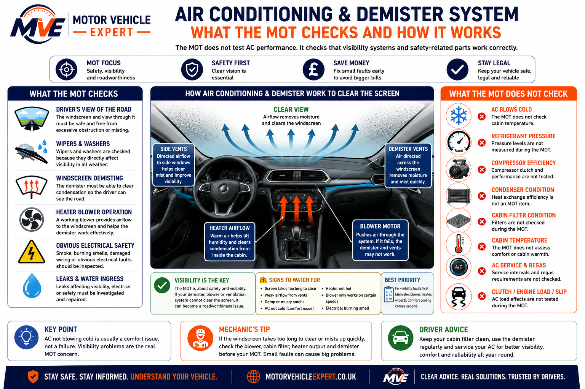
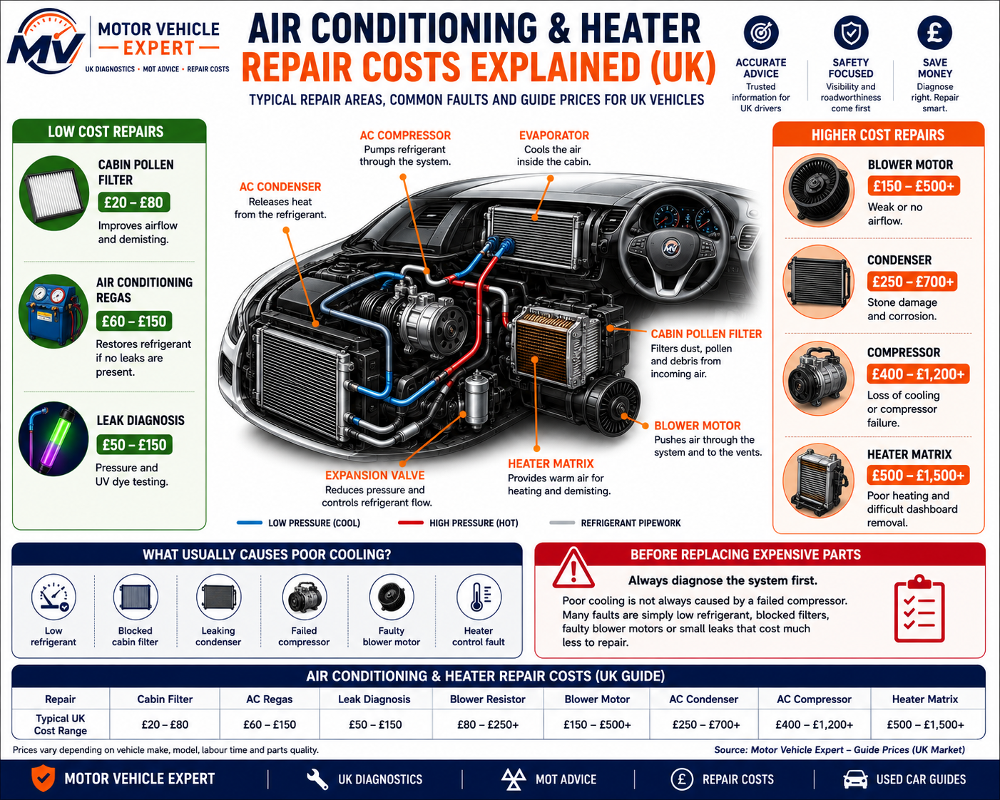

Does An MOT Check Air Conditioning?
No. An MOT does not check air conditioning in the way most drivers mean. The tester does not assess whether the AC blows cold, whether the system needs regassing, whether the compressor is efficient or whether the cabin cools down properly.
A vehicle can normally pass an MOT with air conditioning that does not blow cold, provided the driver's visibility, vehicle safety and roadworthiness are not affected.
AC Not Cold
Poor cabin cooling is usually a comfort and maintenance issue, not a direct MOT failure.
Poor Demisting
If the windscreen cannot be cleared properly, the fault can become a visibility and roadworthiness concern.
Visibility First
Fix blower, heater and demister problems before worrying about AC cooling performance.
AC cold air and windscreen demisting are often confused. The MOT is not testing whether the cabin feels cool. It is concerned with whether the driver's view of the road can be kept clear and safe.
What Does The MOT Check Around Air Conditioning?
The MOT does not test how well your air conditioning cools the cabin or whether the system needs regassing. Instead, the inspection focuses on visibility and roadworthiness. If a fault prevents the windscreen from being cleared properly or affects the driver's ability to see the road safely, it becomes far more important during the MOT.
The MOT does not measure refrigerant pressure, compressor performance or cabin temperature. It does, however, require the driver to have a clear view of the road, so faults affecting the heater, blower or demister should always be investigated before the test.
Driver's View Of The Road
The windscreen must provide a clear forward view. If mist or condensation cannot be removed effectively, visibility and road safety may be affected.
Wipers & Washers
The MOT checks that the windscreen wipers and washers operate correctly because they are essential for maintaining visibility in poor weather.
Windscreen Demisting
A working demister helps remove condensation quickly. Poor screen clearing can reduce visibility and should be repaired before the MOT.
Heater Blower
The blower motor directs air to the windscreen vents. If airflow is weak or absent, the demister may not clear the glass effectively.
Obvious Safety Defects
The MOT is not an air conditioning diagnostic inspection, but obvious electrical faults, damaged wiring or unsafe components should never be ignored.
Overall Safety
The inspection focuses on whether the vehicle can be driven safely. Comfort cooling is not assessed, but visibility-related faults are.

This diagram separates air conditioning maintenance from MOT roadworthiness requirements. A workshop inspecting an air conditioning fault will diagnose cooling performance, refrigerant levels, compressors, condensers, cabin filters and other climate control components. The MOT, however, focuses on whether the vehicle can be driven safely and whether the driver has a clear view through the windscreen.
This means a car with air conditioning that no longer blows cold air will usually still pass its MOT. Problems become more important when the heater, blower motor or demister cannot clear condensation from the windscreen, reducing visibility and potentially affecting safe vehicle control.
One of the biggest MOT misconceptions is that cold air is being tested. It isn't. The real safety priority is keeping the windscreen clear in wet and cold conditions. Before paying for an expensive air conditioning repair, make sure the fault is not caused by a blocked cabin pollen filter, weak blower motor or heater control problem, as these issues can produce similar symptoms while being much cheaper to repair.
What Air Conditioning Items Are Not Normally Checked During An MOT?
Many air conditioning faults can be frustrating, uncomfortable or expensive to repair, but they are not normally part of the MOT inspection. The MOT does not test cabin cooling performance, refrigerant pressure or the health of internal AC components.
A vehicle can usually pass its MOT with air conditioning that does not blow cold, provided the windscreen can still be cleared properly and the fault does not create a safety, visibility or electrical concern.
AC Blows Cold
Not CheckedThe MOT does not test whether the air conditioning cools the cabin or reaches a target temperature.
Gas Level
Not CheckedThe tester does not check AC pressure, refrigerant quantity or whether the system needs regassing.
AC Compressor
Not CheckedCompressor engagement, noise and cooling efficiency are not normally assessed during an MOT.
Condenser Efficiency
Not CheckedThe MOT does not measure condenser performance or cooling efficiency in the air conditioning system.
AC Regas Requirement
Not CheckedNeeding an AC regas is normally a maintenance issue and does not automatically affect the MOT.
Cabin Temperature
Not MeasuredInterior temperature, cooling speed and cabin comfort are not measured as part of the MOT test.
Mouldy AC Smell
Usually Not CheckedA bad smell from the vents is not normally a failure item, although cleaning the system is sensible for comfort and air quality.
Minor AC Gas Leak
Not Normally CheckedSmall refrigerant leaks are not normally identified during an MOT because AC pressure testing is not part of the inspection.
Full AC Fault Diagnosis
Separate InspectionA full air conditioning diagnosis requires workshop testing, pressure checks, leak detection and temperature measurement.
Do not treat an MOT pass as proof that the air conditioning system is healthy. The car may pass even if the AC is empty of gas, the compressor is weak or the condenser is damaged, because cooling performance is not what the MOT is designed to test.
Can A Demister Fault Fail An MOT?
A demister fault can become relevant when the windscreen cannot be cleared properly and the driver's view is affected. The MOT is concerned with visibility and safe road use, not whether the cabin feels comfortable.
If the blower does not work, air does not reach the windscreen or the glass repeatedly mists so badly that visibility becomes unsafe, the vehicle should be repaired before the MOT and before driving in poor weather.
AC Not Blowing Cold
If the air conditioning does not blow cold but the blower and demister still clear the windscreen properly, the car can normally pass.
AC Not Cold Guide →Weak Screen Airflow
Weak airflow to the windscreen can make demisting slow or ineffective, especially during cold, wet or humid weather.
Blower Not Working
A failed blower motor can stop air reaching the windscreen, making it difficult to clear condensation safely.
Screen Keeps Misting
Persistent misting may be caused by damp carpets, water leaks, blocked pollen filters, heater faults or poor ventilation.
No Warm Air
A heater fault can slow demisting and may point to coolant, thermostat, airlock or heater matrix problems.
Heater Not Hot Guide →Unsafe Visibility
If the driver cannot maintain a clear view through the windscreen, the problem should be repaired before the vehicle is used.
When drivers complain that the air conditioning is causing MOT worries, the real issue is often not AC cooling. It is usually weak airflow, a blocked cabin filter, damp inside the vehicle or a heater control problem preventing the windscreen from clearing properly.
Air Conditioning And Demister Symptoms To Check Before An MOT
These symptoms do not automatically mean your vehicle will fail its MOT, but they should never be ignored if they affect visibility, windscreen clearing or safe vehicle operation. Identifying the cause early can often prevent a simple maintenance issue from developing into a more expensive repair.
If the windscreen remains misted, the blower fails, warm air never reaches the screen or visibility is reduced in wet or cold weather, arrange repairs before your MOT and before driving in poor conditions.
AC Not Blowing Cold
Poor cooling is normally a comfort issue caused by low refrigerant, compressor faults or other air conditioning problems rather than an MOT concern.
AC Not Cold Guide →Blower Motor Not Working
Without airflow reaching the windscreen, the demister cannot work effectively, reducing visibility in wet or cold conditions.
Windscreen Mists Up
Persistent condensation should always be investigated because poor visibility is far more important than cabin comfort.
Heater Not Blowing Hot Air
Weak cabin heat can slow windscreen demisting and may indicate coolant, thermostat or heater matrix faults.
Heater Not Hot Guide →Mouldy Air Conditioning Smell
A damp or mouldy smell usually indicates bacteria, moisture or a dirty cabin filter rather than an MOT problem.
Mouldy Air Con Guide →Water Inside The Vehicle
Blocked drains or water leaks can damage electrical systems, increase condensation and make the windscreen harder to keep clear.
Blower Motor Noise
Squealing, clicking or grinding noises often indicate a worn blower motor or debris inside the ventilation system.
Weak Vent Airflow
Poor airflow can be caused by a blocked cabin pollen filter, failing blower motor or restrictions within the ventilation system.
AC Controls Not Responding
Unresponsive climate controls may point to electrical faults, failed control modules or damaged switches that require diagnosis.
Many air conditioning complaints have simple causes such as a blocked cabin pollen filter, a worn blower motor or low refrigerant. Before replacing expensive components like the compressor or condenser, confirm the fault with a proper diagnosis. Restoring strong airflow to the windscreen is usually more important for MOT preparation than achieving the coldest cabin temperature.
Air Conditioning MOT Risk Guide
Most air conditioning faults do not directly fail an MOT because the test does not assess cooling performance. The risk increases when the fault affects windscreen visibility, demisting, blower operation, electrical safety or the driver's ability to see the road clearly.
If the windscreen cannot be cleared properly, the fault should be repaired before the MOT. A warm cabin is not the priority — a clear windscreen and safe forward view are.
AC Not Cold
Poor cooling or warm air from the vents is usually not an MOT issue if visibility is still safe.
Blower Fault
A failed or weak blower can affect airflow to the windscreen and slow down demisting.
Demister Fault
If the demister cannot clear the windscreen, visibility and roadworthiness may be affected.
| AC or heater issue | Direct MOT fail? | Why it matters | Best action |
|---|---|---|---|
| AC not blowing cold | No | Comfort issue, not normally MOT | Regas or diagnose when convenient |
| AC needs regas | No | Refrigerant level is not tested | Book AC service when convenient |
| Mouldy AC smell | No | Usually an air quality or maintenance issue | Clean AC system and replace cabin filter |
| Blower motor not working | Possible | May stop airflow reaching the windscreen | Repair before MOT if demisting is affected |
| Demister not clearing screen | Possible | Driver visibility may be unsafe | Repair before MOT |
| Heater not hot | Possible | May reduce demisting depending on the fault | Diagnose coolant, thermostat or heater system |
| Windscreen constantly misted | Possible | Unsafe forward visibility | Fix leaks, dampness or ventilation faults before test |
| Electrical smoke or burning smell | Possible safety concern | May indicate wiring, blower or control faults | Stop using system and inspect immediately |
When deciding what to repair before an MOT, separate comfort from safety. AC not blowing cold can usually wait, but anything that prevents the windscreen from clearing properly should be treated as a priority because visibility is central to roadworthiness.
What Should You Check Before The MOT?
Before an MOT, focus on visibility first. Air conditioning that does not blow cold is usually less urgent than a blower, demister, heater or ventilation fault that stops the windscreen from clearing properly.
If the screen stays misted, airflow is weak, the blower does not work or the cabin is damp, investigate the fault before test day. These issues can affect visibility and may matter more than whether the AC feels cold.
Pre-MOT Visibility Checklist
- ✓Check the blower works on different speeds.
- ✓Check air reaches the windscreen vents.
- ✓Check the windscreen clears when misted.
- ✓Check wipers and washers work properly.
- ✓Check the heater produces warm air.
- ✓Look for heavy condensation inside the cabin.
- ✓Check for damp carpets or water leaks.
- ✓Do not rely only on cold AC for demisting.
- ✓Fix blower or demister faults before the test.
- ✓Repair electrical smells, smoke or burning quickly.
Best Diagnostic Order
If the AC is not cold but visibility is fine, it is usually not the first MOT priority. Diagnose windscreen clearing problems first.
- 1Check windscreen wipers and washers.
- 2Check blower airflow to the windscreen.
- 3Check heater temperature.
- 4Check cabin filter condition.
- 5Check for damp carpets or water leaks.
- 6Check climate control and vent direction.
- 7Then diagnose AC cooling performance.
Fix Screen Clearing Problems
Poor windscreen clearing is more important for MOT preparation than whether the air conditioning is cold.
Diagnose Before Replacing Parts
Weak airflow may come from a blocked cabin filter or blower fault rather than an expensive compressor problem.
Give Your Vehicle The Best Chance
Repair blower faults, heater faults, demister issues, water leaks and electrical burning smells before the MOT.
For MOT preparation, work from the windscreen backwards. If the glass clears quickly and visibility is safe, AC cooling can often be repaired later. If the screen stays misted, diagnose blower airflow, heater output, cabin filter restriction and water ingress before spending money on an AC regas.
Air Conditioning & Heater Repair Cost UK
Air conditioning repair costs vary depending on whether the problem is routine maintenance, a blocked filter, blower fault, refrigerant leak or a failed compressor. Heater faults can also increase costs if they involve the cooling system or require major dashboard removal.
Do not assume poor cooling always means a failed compressor. Many air conditioning faults are caused by low refrigerant, blocked cabin filters, leaking condensers or blower motor problems, all of which can be significantly cheaper to repair.
Service & Maintenance
£20–£150Cabin filter replacement, AC regassing and basic leak diagnosis are often the first repairs and are usually the least expensive.
Blower & Airflow Faults
£80–£500+Blower motors, resistor packs and ventilation faults can reduce airflow to the windscreen and affect demisting performance.
Compressor & Heater Faults
£400–£1,500+Compressors, heater matrixes and major refrigerant leaks usually involve more labour and higher parts costs.

The infographic groups repairs into low, medium and higher cost categories so you can see where most faults occur. Routine maintenance such as replacing a cabin filter or regassing the system is usually inexpensive, while compressor, condenser and heater matrix failures are among the most costly repairs because of additional labour and component replacement.
It also highlights an important workshop principle: always diagnose the fault before replacing expensive parts. Low refrigerant, blocked filters and blower faults commonly produce the same symptoms as a failing compressor, yet often cost hundreds of pounds less to repair.
| Repair | Typical UK Cost | Priority | Typical Cause |
|---|---|---|---|
| Cabin filter replacement | £20–£80 | Routine service | Restricted airflow |
| Air conditioning regas | £60–£150 | Routine maintenance | Low refrigerant |
| Leak diagnosis | £50–£150 | Before repairs | Pressure or UV dye testing |
| Blower resistor repair | £80–£250+ | Medium | Fan speed faults |
| Blower motor replacement | £150–£500+ | Medium | No or weak airflow |
| AC condenser replacement | £250–£700+ | High | Stone damage or corrosion |
| AC compressor replacement | £400–£1,200+ | High | Compressor failure |
| Heater matrix repair | £500–£1,500+ | High | Poor heating or coolant leak |
The most expensive repair is often the one diagnosed incorrectly. Before authorising a compressor replacement, confirm that the real fault is not simply low refrigerant, a leaking condenser, blocked cabin filter or failed blower motor. Correct diagnosis can save hundreds of pounds and restore both cooling performance and safe windscreen demisting.
Related MOT, Air Conditioning And Visibility Guides
Continue through the Motor Vehicle Expert MOT question cluster, air conditioning fault guides, heater guides and windscreen visibility resources. These pages help explain whether a fault is an MOT issue, a comfort problem or a repair cost concern.
MOT Question Guides
Air Conditioning & Heater Guides
Visibility & MOT Failure Guides
This section is the main navigation hub for related air conditioning, heater, visibility and MOT content. Keeping most related links here avoids repeating the same pages too often throughout the article.
Does MOT Check Air Conditioning FAQs
Clear answers to common UK driver questions about air conditioning, demisters, heater blowers, windscreen visibility and MOT inspections.
Does an MOT check air conditioning?
No. The MOT does not test whether the air conditioning blows cold, whether the system needs regassing or whether the compressor is working efficiently. Cooling performance is normally a comfort and maintenance issue.
Can AC not blowing cold fail an MOT?
Usually no. A vehicle can normally pass if the air conditioning does not blow cold, provided the windscreen can still be cleared properly and visibility is not affected.
Does the MOT check the demister?
The MOT is concerned with the driver having a safe view of the road. If a demister, blower or heater fault means the windscreen cannot be cleared properly, the issue may become relevant.
Can a heater blower fail an MOT?
Possibly. A failed blower can matter if it prevents airflow reaching the windscreen and stops condensation or mist from being cleared safely.
Can a mouldy air conditioning smell fail an MOT?
Usually no. A bad smell from the vents is not normally an MOT failure item, but it should still be cleaned because it can indicate bacteria, moisture or a dirty cabin filter.
Should I fix air conditioning before an MOT?
Fix it before the MOT if the fault affects demisting, windscreen visibility, blower operation, electrical safety or safe driving. If the only fault is weak cooling, it can usually be repaired separately.
Does an MOT check AC refrigerant gas?
No. MOT testers do not check refrigerant pressure, gas quantity or whether the air conditioning system needs regassing.
Can a blocked cabin filter affect an MOT?
Not directly, but a blocked cabin filter can reduce airflow to the windscreen. If poor airflow stops the screen clearing properly, visibility may become a concern.
Can water inside the car affect demisting?
Yes. Damp carpets, blocked drains or water leaks can increase condensation inside the cabin, making the windscreen harder to clear.
Does heater not blowing hot air fail an MOT?
Not automatically. It may matter if poor heater output prevents the windscreen from clearing safely, especially in cold or wet conditions.
Can electrical smoke from the blower affect an MOT?
Yes. Smoke, burning smells or obvious electrical faults should be inspected immediately because they may indicate a safety concern.
What matters most: AC cooling or windscreen visibility?
Windscreen visibility matters most for MOT preparation. Cold air is mainly a comfort feature, while a clear forward view is a safety requirement.
This guide explains the difference between air conditioning comfort faults and visibility-related MOT concerns. For further reading, use the Related Guides section above to explore heater faults, AC repairs, windscreen issues and MOT preparation.